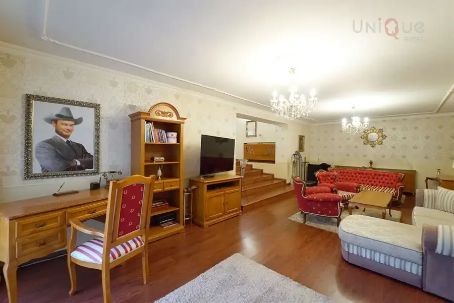
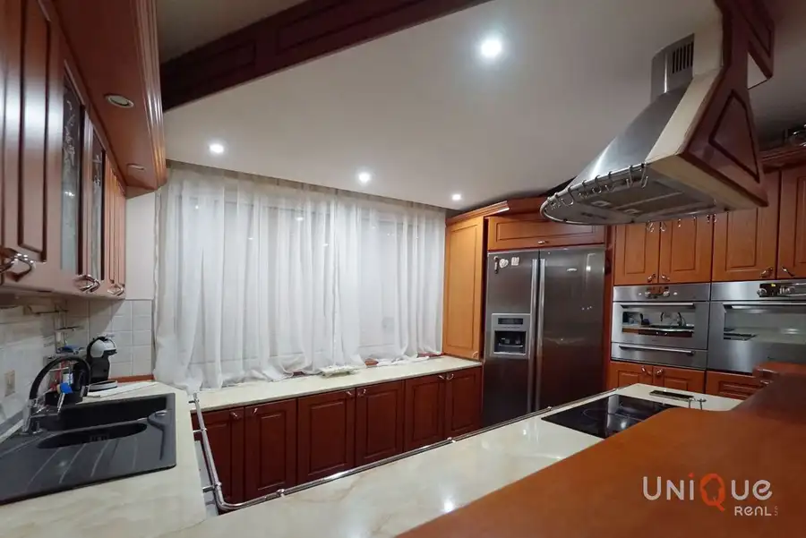
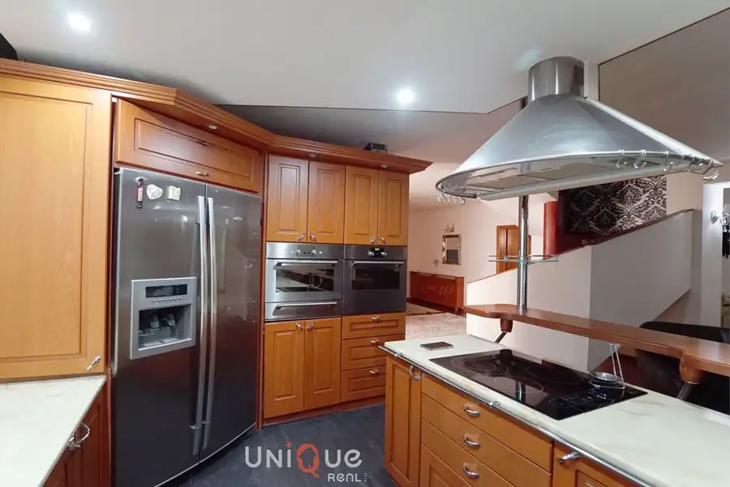
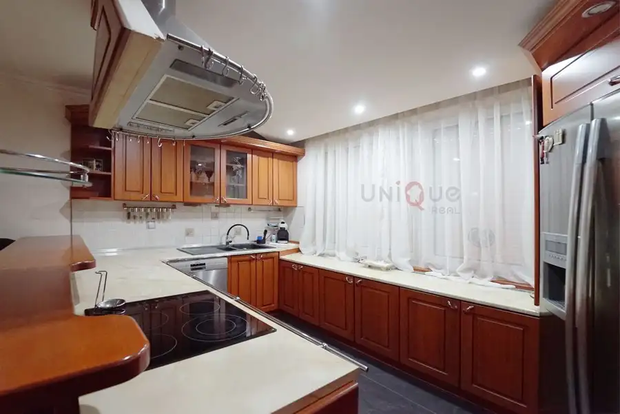
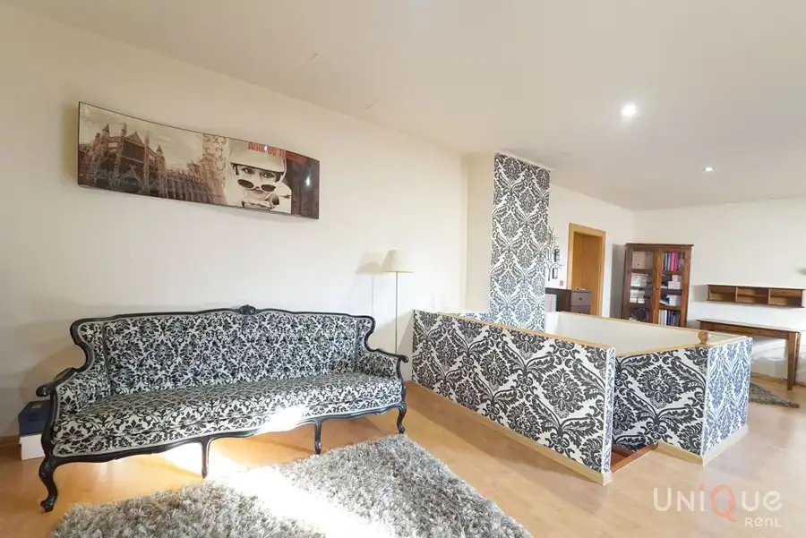
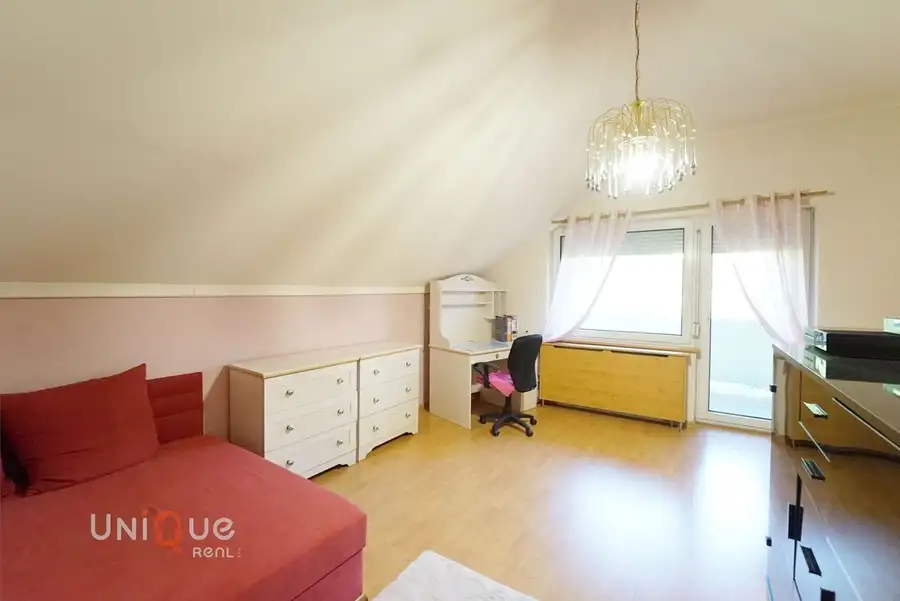

Na predaj priestranný a kompletne zariadený rodinný dom s bazénom a dvojgarážou v tichej lokalite Komárna
Komárno







- Plocha316 m²
- StavKompletná rekonštrukcia
O nehnuteľnosti
Ponúkame na predaj krásny a veľkorysý 5-izbový rodinný dom po kompletnej rekonštrukcii, ktorý sa nachádza v pokojnej a vyhľadávanej časti mesta Komárno.Dom je ideálny pre rodinu, ktorá hľadá ihneď obývateľné bývanie s dostatkom priestoru, súkromia a oddychu.Základné informácie•Lokalita: Komárno•Typ nehnuteľnosti: rodinný dom (radový)•Počet izieb: 5•Úžitková plocha: cca 316 m²•Zastavaná plocha: cca 158 m²•Pozemok: cca 450 m²•Počet podlaží: 2 + suterén•Stav: kompletná rekonštrukcia•Kolaudácia: 2002•Konštrukcia: tehla + sivé bloky, zateplený polystyrénomDispozícia domuPrízemie: vstupná chodba s vstavanou skriňou, hala, slnečná kuchyňa s jedálňou a priamym výstupom na zastrešenú terasu, obývacia izba s výstupom na záhradu, kúpeľňa s vaňou a WC.Poschodie: svetlá obývacia izba, spálňa s balkónom a vstavanou skriňou, detská izba s balkónom a šatníkom, kúpeľňa so sprchovým kútom a WC.Suterén: fitness, sklad, spoločenská miestnosť s kuchynkou a štýlová vínna pivnica.Exteriér a vybavenieZáhrada je kompletne upravená a ponúka jazierko s rybkami a vodopádom, bazén, murovanú letnú kuchyňu a dostatok zelene.K domu patrí dvojgaráž s bočným vstupom a možnosť parkovania ďalších áut pred domom.Technické informácie•Nové rozvody elektriny, vody a plynu•Plastové okná s vonkajšími roletami•Bezpečnostné dvere, zateplenie•Kúrenie: plynový kondenzačný kotol + radiátory•Podlahy: keramická dlažba / laminát•Kuchyňa na mieru so vstavanými spotrebičmi•Dom sa predáva kompletne zariadený•Nízke prevádzkové nákladyLokalitaDom sa nachádza v tichej a bezpečnej časti Komárna, s výbornou dostupnosťou do centra mesta (cca 900 m).V okolí je kompletná občianska vybavenosť – obchody, školy, škôlky, športoviská, detské ihriská aj kúpalisko.MHD v Komárne je bezplatná, čo prispieva k pohodlnému každodennému životu.Výhody nehnuteľnosti- kompletná rekonštrukcia- zariadený dom bez nutnosti investícií- tichá lokalita s výbornou dostupnosťou- bazén, jazierko, letná kuchyňa, dvojgaráž- nízke mesačné náklady Ak hľadáte kvalitné, priestranné a komfortné bývanie v Komárne, tento dom je presne pre vás.Stačí sa nasťahovať!Cena 298.000, - €Kontakt k obhliadke:Daniel Orvoš, Ing.:0905422818daniel.orvos@wuestenrot.sk
Parametre
- Druh
- Rodinný dom
- Dátum zverejnenia
- 08. 11. 2025
- Energetický certifikát budovy
- nie je
- Plocha pozemku
- 820 m²
- Počet garáží
- 2
- Počet nadzemných podlaží
- 2
- Počet podzemných podlaží
- 1
- Rok výstavby
- 2002
- Stav nehnuteľnosti
- Kompletná rekonštrukcia
- Terén pozemku
- Rovinatý
- Typ
- Predaj
- Typ konštrukcie
- Tehlová
- Vybavenie
- Balkón, Terasa, Pivnica, Predzáhradka, Garáž, Vonkajšie parkovacie miesto
- Vykurovanie
- Ústredné
- Zastavaná plocha
- 158 m²
- Úžitková plocha
- 316 m²
Kde to je


Mohlo by Vás zaujímať
 DomNové
95 000 €Na predaj rozostavaný rodinný dom v Zlatnej na Ostrove
Zlatná na Ostrove
100 m²
DomNové
95 000 €Na predaj rozostavaný rodinný dom v Zlatnej na Ostrove
Zlatná na Ostrove
100 m²
 BytNové
83 000 €Exkluzívne na predaj 2 izbový byt na Gazdovskej ul.
Komárno
2-izbový52 m²2. podlažie
BytNové
83 000 €Exkluzívne na predaj 2 izbový byt na Gazdovskej ul.
Komárno
2-izbový52 m²2. podlažie
 BytNové
84 000 €Na predaj veľký 3 izbový byt v Hurbanove na Sládkovičovej ul.
Hurbanovo
3-izbový78 m²4. podlažie
BytNové
84 000 €Na predaj veľký 3 izbový byt v Hurbanove na Sládkovičovej ul.
Hurbanovo
3-izbový78 m²4. podlažie